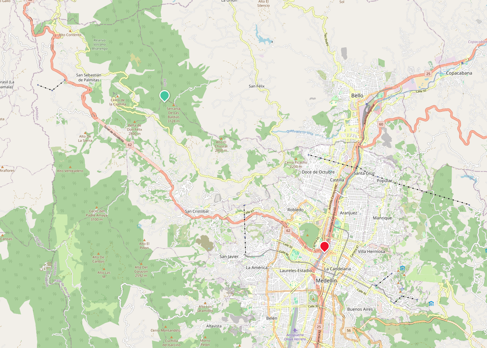
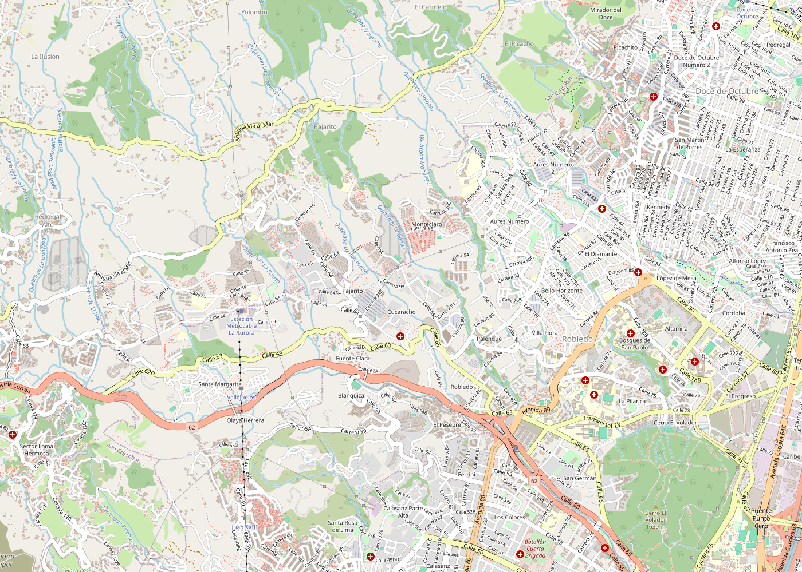

Datum, Magna Sirgas y CTM12
Semana 3 · Módulo 0: Fundamentos cartográficos y geodesia
Sesión 3
Lo que haremos hoy
Validación + lecturas
Solución del Taller G02 (Partes 1-2) y verificación de las lecturas asignadas
CRS y Datum
Elipsoide, geoide, punto de amarre, Bogotá → Magna Sirgas
CTM12
De varios orígenes a uno solo, con ejercicios de conversión
Su cuenca
La Quebrada La Iguaná: el área de estudio de todo el semestre
Quiz 1 y Taller G02
Quiz 1 cierra el aula; Taller G02 (Partes 3–4) en el laboratorio
Antes de seguir
¿Qué vimos la semana pasada?
- Escala: numérica vs. gráfica, y cómo hallarla sin que la den
- El área se escala al cuadrado (1:N → ×N²)
- Píxel y resolución espacial: el detalle de un raster
- Coordenadas geográficas: latitud, longitud, GMS ↔ decimales
- 1° ≈ 111 km en el Ecuador — la conversión que usamos hoy
Antes de la teoría nueva
Validemos el Taller G02: Partes 1 y 2
La semana pasada cada grupo trabajó con un mapa distinto. Revisemos las respuestas correctas antes de seguir.
Parte 1: Escala
Cada mapa tiene una escala real conocida — la comparamos con lo que calculó cada grupo.
Parte 2: Coordenadas
GMS ↔ decimal tenía puntos fijos: A, B, C y D — esos sí tienen una única respuesta correcta.
Parte 1, Ejercicio 1.1
Solución: la escala real de cada mapa
¿A qué grupo le tocó cuál? Comparen su escala calculada contra la real.
| Mapa | Elemento de referencia | Escala real |
|---|---|---|
| A — Atanasio Girardot | Terreno de juego del estadio (110 × 73.5 m) | 1 : 5 000 |
| B — Unidad Deportiva Belén | Pista atlética (400 m) o piscina olímpica (50 × 25 m) | 1 : 5 000 |
| C — Envigado | Manzana típica (~80-100 m de lado) | 1 : 10 000 |
| D — Itagüí | Manzana típica (~80-100 m de lado) | 1 : 10 000 |
| E — Sabaneta | Manzana típica alrededor del Parque Principal | 1 : 10 000 |
Parte 1, Ejercicios 1.2 y 1.3
Distancia y área: no hay un número único
Cada grupo eligió sus propios puntos y su propio polígono — por diseño, no por error.
Cómo saber si está bien
Si su escala de 1.1 quedó cerca de la real (tabla anterior), su método está bien: la distancia y el área que calcularon con esa escala también lo están.
Señal de alerta
Un resultado absurdamente grande o pequeño casi siempre es una unidad mal convertida (mm↔cm↔m), o escala lineal aplicada al área en vez de escala².
Parte 2, Ejercicio 2.1
Solución: GMS → decimal
Estos puntos sí eran iguales para todos los grupos.
| Punto | GMS | Decimal |
|---|---|---|
| A | 6° 12' 02" N, 75° 34' 40" O | 6.2006° N, −75.5778° |
| B | 4° 35' 53" N, 74° 04' 54" O | 4.5981° N, −74.0817° |
Parte 2, Ejercicio 2.2
Solución: decimal → GMS
| Punto | Decimal | GMS |
|---|---|---|
| C | 6.2006° N, −75.5779° O | 6° 12' 02.2" N, 75° 34' 40.4" O |
| D | −75.581° (solo longitud) | 75° 34' 51.6" O |
Si su resultado difiere en el último dígito de los segundos, es casi siempre redondeo — revisen si difiere en los minutos o los grados, eso sí es un error de método.
En parejas, 4 minutos
¿Qué recuerdan de las lecturas?
Tres situaciones prácticas. Respóndanlas con lo que leyeron (IGAC-DANE secciones 8-9, y Rodolfo Franco secciones 1-3) antes de que sigamos con la teoría.
- Les entregan una capa antigua de predios (probablemente en Datum Bogotá) para sobreponerla con las capas nuevas del curso, sin que nadie la reproyecte antes. ¿Qué van a ver al abrir las dos capas juntas en QGIS, y por qué?
- Antes de 2020, un proyecto de vía que cruzaba dos municipios con orígenes cartográficos distintos necesitaba un paso extra que hoy ya no hace falta. ¿Cuál era ese paso, y por qué CTM12 lo elimina?
- Si miden 100 km en un mapa CTM12, muy lejos del meridiano central (73° O), ¿esa distancia medida sale un poco mayor o un poco menor que la distancia real? (Pista: el factor k₀.)
Antes de Datum y CTM12
¿Qué es un Sistema de Referencia de Coordenadas?
La semana pasada usamos latitud y longitud como si fueran obvias. Hoy vemos qué las hace válidas.
El problema
El par (6.24° N, 75.58° O) no significa nada por sí solo: hace falta saber respecto a qué se midió.
La respuesta: un CRS
Un Sistema de Referencia de Coordenadas (CRS) define el elipsoide, el datum y, si aplica, la proyección. QGIS lo pregunta cada vez que cargan una capa.
La base de todo CRS
Tres superficies, un solo territorio
Ningún elipsoide coincide exactamente con la forma real de la Tierra — y no tiene por qué.
La superficie real es irregular; el geoide sigue el nivel medio del mar; el elipsoide es la aproximación matemática lisa que se usa para calcular.
La base invisible de todo mapa
¿Qué es un datum?
Las coordenadas no significan nada sin decir desde dónde se miden.
Elipsoide
Un modelo matemático de la forma de la Tierra (achatada en los polos): la superficie de referencia sobre la que se calculan las coordenadas.
Punto de amarre
El punto exacto donde ese elipsoide se ancla a la Tierra real. Dos datums pueden usar el mismo elipsoide pero anclado distinto, y dar coordenadas distintas para el mismo lugar.
La consecuencia práctica
Mismo lugar, coordenadas distintas
El mismo punto real, leído con dos anclas distintas, da dos coordenadas ligeramente distintas.
Datum Bogotá ancla al observatorio; Magna-Sirgas ancla al centro de masa de la Tierra. La diferencia se nota al mezclar capas.
Un cambio con nombre y fecha
Datum Bogotá → Magna Sirgas
IGAC-DANE, 2004: Colombia adopta Magna Sirgas como marco de referencia geocéntrico.
Datum Bogotá
Amarrado a un punto local (observatorio de Bogotá), 1941: coherente para Colombia, pero incompatible con GPS y estándares globales.
Magna Sirgas
Geocéntrico, amarrado al centro de masa de la Tierra, compatible con GPS y con la red continental SIRGAS.
Precisión + compatibilidad
Mezclar datums sin reproyectar produce un desfase visible de varios metros entre capas.
En parejas, 2 minutos
Practiquen: ¿por qué no calzan las capas?
Un compañero digitalizó los predios de su cuenca usando una capa base en Datum Bogotá. Ustedes cargan una capa de vías descargada en Magna-Sirgas (EPSG:4326), sin reproyectar. ¿Qué van a ver al abrir ambas capas juntas en QGIS? ¿Un error de software, o algo distinto?
Revisemos juntos
Solución: el desfase silencioso
No es un error de software: QGIS carga las dos capas sin quejarse. Lo que ven es un desplazamiento sistemático de varios metros entre las vías y los predios — se ven "corridas" unas respecto a otras, aunque representen el mismo lugar real. La única forma de arreglarlo es reproyectar explícitamente una de las dos al datum de la otra.
El siguiente problema
De coordenadas geográficas a coordenadas planas
Grados no se pueden medir con una cinta métrica. Para diseño y construcción, se necesitan metros en un plano.
Coordenadas geográficas
Latitud/longitud sobre la superficie curva del elipsoide. Buenas para ubicar, difíciles para medir distancias y áreas directamente.
Coordenadas planas
Este/Norte en metros, sobre una proyección. Malas para el planeta completo, perfectas para un país o una obra.
Cómo se aplana una esfera
Proyección Transversa de Mercator
Un cilindro imaginario envuelve la Tierra, secante (no tangente) a lo largo de dos líneas paralelas al meridiano central.
En las líneas secantes la escala es exacta (k=1). Entre ellas se reduce (k<1); fuera, se amplía (k>1). Por eso CTM12 usa k₀ = 0.9992 en su meridiano central: reparte la deformación en vez de concentrarla.
El problema antes de 2020
Más de mil orígenes distintos
Colombia usaba 6 orígenes regionales para zonas rurales, y más de 1 000 orígenes locales para zonas urbanas.
Un proyecto que cruzaba dos orígenes necesitaba conversiones manuales propensas a error, y las planchas cartográficas no siempre coincidían en los bordes.
Resolución IGAC 471 de 2020
CTM12: un solo Origen Nacional
MAGNA-SIRGAS 2018 / Origen-Nacional (EPSG:9377), cerca de Puerto López, Meta — equidistante entre los extremos oriental y occidental del país continental.
Un solo sistema
Todo el territorio continental en una única base de datos de coordenadas planas, sin fronteras internas que reconciliar.
Obligatorio desde 2020
Para toda cartografía oficial y gestores catastrales, según la Resolución 471 de 2020 (actualizada por la 529).
MAGNA-SIRGAS 2018 / Origen-Nacional
CTM12 en números
Los parámetros que usa QGIS internamente cuando eligen este sistema de coordenadas.
Proyección
Transversa de Mercator, meridiano central 73° O, latitud de origen 4° N.
Factor de escala (k₀)
0.9992: corrige la deformación de la proyección lejos del meridiano central.
Falso Este
5 000 000 m: evita coordenadas Este negativas al oeste del meridiano central.
Falso Norte
2 000 000 m: evita coordenadas Norte negativas al sur del origen.
Por qué esos dos números tan grandes
Falso Este y Falso Norte
Sin ellos, medio país tendría coordenadas negativas — incómodo para calcular y fácil de confundir con un error.
Sumar 5 000 000 m al Este y 2 000 000 m al Norte desplaza el origen fuera del territorio: todas las coordenadas de Colombia quedan positivas.
Para calcular a mano (aproximación esférica)
De decimal a Este/Norte
La fórmula real usa el elipsoide y series matemáticas (eso lo hace QGIS). Esta aproximación esférica alcanza para entender el concepto.
Se queda a menos de 1 km del valor exacto — suficiente para entender el método, no para trabajo profesional.
Ejemplo resuelto
Medellín, Parque Berrío
Coordenadas aproximadas: 6.2442° N, −75.5812°
En parejas, 4 minutos
Practiquen: la desembocadura de su cuenca
La Quebrada La Iguaná desemboca en el Río Medellín en, aproximadamente, 6.2596° N, −75.5750°. Calculen su Este y Norte en CTM12 con la fórmula simplificada, paso a paso, antes de ver la solución.
Revisemos juntos
Solución: la desembocadura en CTM12
Quiz rápido, en voz alta
¿Datum o proyección?
Para cada situación, digan si el problema es de datum o de proyección.
A = Datum (anclas distintas) · B = Proyección (pasar de esfera a plano).
Sección 2
Su territorio para todo el semestre
Un cambio de diseño
Todo el curso, una sola cuenca
En vez de una ladera distinta por grupo, todos trabajan sobre la misma cuenca real: la Quebrada La Iguaná.
Por qué
Permite preparar datos y ejemplos mucho más a fondo para una sola área, y comparar resultados entre grupos en vez de que cada uno vea algo distinto.
Qué no cambia
Sigue siendo un proyecto de grupo con entregas propias — lo que cambia es que ya no hay sub-polígonos por grupo: todos delinean y trabajan la cuenca completa.
El occidente de Medellín
La Quebrada La Iguaná
La corriente de agua más importante del occidente de la ciudad.

Nacimiento
Alto de Boquerón, Cerro de Las Repetidoras (corregimiento San Cristóbal), ≈2 950 msnm.
Desembocadura
Río Medellín, frente a Quebrada Santa Elena y Plaza Minorista, ≈1 453 msnm.
Longitud
15 km, atravesando San Cristóbal, San Javier, Robledo y Laureles-Estadio.
El patrón que van a analizar
Un gradiente urbano-rural real, con números
La cuenca completa mide ≈46.25 km², dividida de forma muy desigual entre sus dos mitades.

Parte rural (alta)
38.73 km² — San Cristóbal, cobertura boscosa, más de 20 afluentes menores (San Franciscana, La Seca, Los Amigos, La Popa, entre otros).
Parte urbana (baja)
7.52 km² — Robledo, Doce de Octubre, Laureles-Estadio: cartografía urbana densa, cerca del Cerro El Volador.
Por qué es una cuenca interesante
Una cuenca con historia de riesgo
No es un polígono arbitrario: tiene antecedentes reales que van a aparecer en varios módulos del curso.
1880
Una creciente catastrófica el 23 de abril destruyó gran parte del entonces pueblo de Robledo y desvió el curso de la quebrada.
Hoy
Vecinos siguen reportando crecientes súbitas; es una de las quebradas urbanas más monitoreadas de Medellín.
Manejo
Azud de control de sedimentos (Carrera 80) y presa de laminación con disipación de energía (Carrera 70).
Un solo territorio, todo el semestre
Qué van a hacer con esta cuenca
Módulo 1-2
Cartografía urbana densa en la parte baja; cuencas y pendientes reales bajando de San Cristóbal.
Módulo 3-5
Datos secundarios GNSS/topográficos; NDVI comparando cobertura boscosa vs. urbanizada.
Transversal
Riesgo de crecientes (Civil) y espacio público en la franja urbana (Diseño Urbano).
Datos base: Portal de Datos Abiertos AMVA (división política + DEM). confirmar cobertura del DEM para toda la cuenca antes del Módulo 1.
Ronda rápida, individual
Más práctica: dos puntos de la cuenca
Uno en cada sentido de conversión — no se repite el mismo paso dos veces.
Nacimiento (Alto de Boquerón): 6° 20' 00.6" N, 75° 39' 14.4" O. Conviertan a decimal.
Punto medio de la quebrada: 6.29655° N, −75.61450°. Conviertan a GMS.
Revisemos juntos
Solución: dos puntos de la cuenca
En parejas, con la fórmula simplificada
Ahora en CTM12: los mismos dos puntos
Calculen Este y Norte para el Punto A (6.3335° N, −75.6540°) y el Punto B (6.29655° N, −75.61450°), con la misma fórmula del ejemplo de Parque Berrío.
Revisemos juntos
Solución + un dato que no cuadra
Con Pitágoras entre el Punto A (nacimiento) y la desembocadura (Este ≈ 4 715 288, Norte ≈ 2 251 337), la línea recta da ≈12 km — pero la quebrada recorrida mide 15 km. ¿Por qué la diferencia? El cauce serpentea: la línea recta ignora las curvas que sí van a digitalizar en QGIS.
Volviendo a la fórmula de Este
Por qué el coseno, en números
Metros que representa 1° de longitud, según la latitud — por eso Norte no lo necesita y Este sí.
| Latitud | Metros por 1° de longitud |
|---|---|
| 0° (Ecuador) | 111 320 m |
| 6.29° (Medellín / La Iguaná) | 110 650 m |
| 12.5° (punto más al norte de Colombia) | 108 681 m |
| 45° (referencia, Europa) | 78 715 m |
Los meridianos miden siempre lo mismo (por eso Norte usa un factor fijo); los paralelos se encogen hacia los polos (por eso Este necesita cos(lat)).
Verdadero o falso, en voz alta
¿Entendieron bien el concepto?
- Si dos capas están en el mismo datum pero proyecciones distintas, siempre calzan sin reproyectar. — Falso
- Un grado de latitud siempre mide lo mismo en metros, sin importar dónde estés. — Verdadero
- El factor k₀ = 0.9992 existe porque el cilindro de la proyección es secante, no tangente. — Verdadero
- El falso este y el falso norte cambian la escala del mapa. — Falso (solo desplazan el origen)
- Antes de 2020, todos los mapas catastrales de Colombia usaban el mismo origen de coordenadas planas. — Falso (más de 1000 orígenes locales)
Cierra el Módulo 0
Quiz 1: Fundamentos cartográficos
8% de la nota final. Cubre todo lo visto en las Semanas 1 a 3.
Modalidad
Individual, presencial, en clase, sin excepción.
Contenido
Escala, píxel/resolución, coordenadas geográficas, datum, CTM12.
Conexión con su proyecto
Una de las preguntas pide las coordenadas aproximadas de un punto de la cuenca Iguaná.
Ahora en grupo, en el laboratorio
Taller G02: Partes 3 y 4
Terminamos el taller que empezamos la semana pasada, ya sobre la cuenca de La Iguaná.
Parte 3
Coordenadas planas CTM12: calculan a mano las coordenadas de un punto de la cuenca compartida, igual que en el ejercicio de la desembocadura.
Parte 4
Datum: responden en grupo, conectando con las dos lecturas asignadas la semana pasada.
Guarden todo
Retoman este taller completo (Partes 1–4) en el Módulo 1 para verificar con QGIS.
Cierre
Para la próxima clase
Semana 4: Módulo 1
Empieza QGIS: entorno, interfaz, CRS de proyecto, carga de capas.
Instalar QGIS
Última versión LTR, en su laptop personal, antes de la Semana 4 (guía G03).
¿Dudas?
Escríbanme: fjgomezc@eafit.edu.co · Chat de Teams